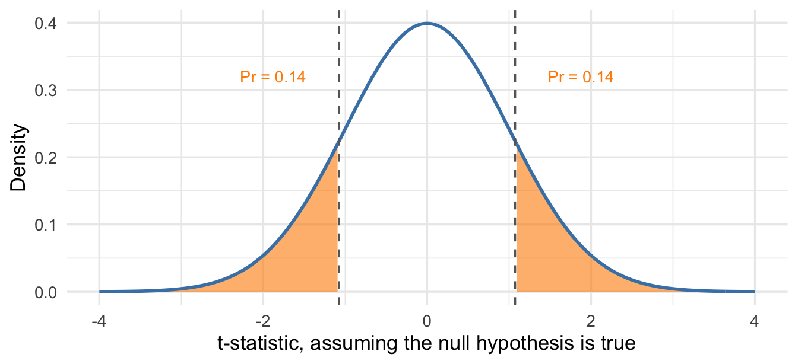

17 Hypothesis Tests and p-values
The confidence interval we derived in the last chapter reports every value of \(\mu\) — the true mean — that the data leave plausible. Differences between these values and our observed mean \(\bar{x}\) are consistent with random sampling from the assumed population or probability model. Sometimes, though, our question concerns one specific value — here, whether SAP customers have different-than-average ROE. A hypothesis test measures the evidence against a specific claim, called the null hypothesis. In the SAP example, we have at least two null hypotheses we could test:
- Null hypothesis 1: SAP customers’ mean ROE equals the industry average of 15.7%. This lets us evaluate Nucleus’s claim that SAP customers are less profitable.
- Null hypothesis 2: SAP customers’ mean ROE equals the 20.7% implied by SAP’s marketing claim.
We’ll start with the first hypothesis. If we don’t have strong evidence that SAP customers’ mean ROE differs from the industry average, then we shouldn’t put much stock in Nucleus’s claim.
Generally speaking, the null hypothesis will represent some kind of “default”: There’s no difference between two groups (SAP customers vs all other companies), no difference in health outcomes between treatment and placebo groups, and so on. Most of the time when we’re testing a null hypothesis it’s because we or someone else is very confident that it’s not true, and the testing enterprise is constructed to rigorously falsify it (if possible).
A hypothesis test proceeds similarly to a criminal trial:
Step 1: Posit a null hypothesis and its alternative
For our example, the null hypothesis is that the mean ROE of SAP customers equals the 15.7% industry benchmark, and the alternative is that it doesn’t. Think of the null hypothesis as the defendant in a criminal trial in which you are a juror. As a juror, you have to presume the defendant is innocent when the trial begins — regardless of what you actually believe. In a hypothesis test we (the jury) begin by assuming the null hypothesis is true (innocent).
Step 2: Collect and evaluate evidence
During the trial, the prosecutor presents evidence against the defendant — the null hypothesis. The defense provides alternative explanations for that evidence. Are the data consistent with the null hypothesis?
The “prosecution” has already shown us that the estimated average ROE for SAP firms is 12.64%, or 3.1 percentage points less than the posited value of 15.7%. One explanation for the discrepancy is that SAP customers are truly less profitable on average.
The “defense” provides an alternative explanation: A difference that large could be due to chance variation when we use a sample of 81 companies instead of the entire population of 30,000. The typical deviation of the sample mean from the true mean is measured by the standard error, which we computed in the last chapter as about 2.85 percentage points.
Our job as the juror is to compare the observed deviation, \(\bar{x} - \mu_0\), to the typical deviations produced by random sampling — the standard error. The t-statistic does exactly that:
\[ T = \frac{\bar X - \mu_0}{SE(\bar X)}, \qquad t = \frac{12.64 - 15.7}{2.85} = -1.07. \]
Similar to a z-score, the \(t\)-statistic measures how many standard errors the sample mean is from the hypothesized value. Here the sample mean is about 1.07 standard errors below the industry benchmark. The Central Limit Theorem tells us that the \(t\)-statistic is approximately a z-score when the null hypothesis is true:
\[ T = \frac{\bar X - 15.7}{SE(\bar X)}\approx N(0,1). \]
This formalizes the \(t\)-statistic as a measure of evidence against the null hypothesis. If the null hypothesis is true, then the \(t\)-statistic is close to zero in most samples. We should see \(t\)-statistics bigger than 2 or less than -2 only about 5% of the time, and values bigger than 3 or less than -3 only about 0.3% of the time.
The p-value turns this insight into a probability statement. The p-value asks: Assuming the defendant is innocent, how likely is it we’d see evidence at least as damning as what we observed? In statistical terms, if the null hypothesis is true then how likely is it we’d see a \(t\)-statistic at least as extreme as the one we observed? In our case “extreme” just means a difference far from zero in either direction, since the alternative hypothesis runs in both directions. Computing a p-value is a simple normal probability calculation:
\[ 1 - \Pr(-1.07 < T < 1.07) \approx 0.28. \]
The smaller the p-value, the stronger the evidence against the null hypothesis. For historical reasons, and because they apply to much broader sets of null hypotheses, it’s more common to see \(p\)-values reported than \(t\)-statistics.
Step 3: Reach a verdict
In a criminal trial, we don’t find defendants “guilty” or “innocent” — they’re either “guilty” or “not guilty.” A defendant can be found not guilty because the jury concludes they didn’t commit the crime, or because the evidence presented was simply too weak to find the defendant guilty beyond a reasonable doubt.
In a hypothesis test, we don’t conclude that the null hypothesis is true or false; we either “reject” it or “fail to reject” it. An extreme \(t\)-statistic and the associated small p-value mean the data are hard to reconcile with the null hypothesis being true — we would have to have gotten quite an unlucky sample to explain the observed difference. When the p-value is sufficiently small, we conclude the null hypothesis is “guilty” beyond a reasonable doubt and act as if it’s false. A large p-value corresponds to a “not guilty” verdict: we fail to reject the null hypothesis.
The cutoff for “small” is specified by the significance level \(\alpha\). A significance level of \(\alpha = 0.05\) means we reject the null hypothesis if the p-value is less than 0.05, and fail to reject it otherwise. With the normal approximation used here, this is equivalent to rejecting when the \(t\)-statistic is about 2 or more in absolute value. The choice of \(\alpha\) should, in principle, reflect the consequences of a false positive — rejecting the null hypothesis when it is actually true. A criminal trial and a civil trial have different standards of evidence because the consequences of getting the verdict wrong are more severe in a criminal trial. In practice, though, \(\alpha = 0.05\) is the most common choice.
What does it mean to “fail to reject”? The \(t\)-statistic is close to zero, and the p-value is large. There are two ways this can happen:
- We get a big observed difference from the hypothesized value and a large standard error. We can’t rule out the null hypothesis because the sample size is too small relative to intrinsic variability in ROE. Essentially, we can’t find the defendant guilty because the evidence is limited and circumstantial.
- We get a small observed difference from the hypothesized value and a small standard error. We can’t rule out the null hypothesis because the observed difference is still small relative to the standard error.
In the first case we return a “not guilty” verdict because we still have a lot of uncertainty about whether the defendant committed the crime. In the second case the same verdict comes with much less uncertainty: the data rule out large departures from the hypothesized value. Neither case proves the null hypothesis true.
For the industry benchmark, the p-value is about 0.28, which is larger than 0.05, so we fail to reject the null hypothesis. The sample does not provide strong evidence that SAP customers’ mean ROE differs from the industry average.
17.1 Connecting confidence intervals and hypothesis tests
It turns out that the 95% confidence interval contains every hypothesized value of \(\mu\) that we would fail to reject at the \(\alpha = 0.05\) (5%) significance level. If a value is more than two standard errors from the mean, it’s outside of the confidence interval and the \(t\)-statistic is either less than -2 or greater than 2, so we would reject the null hypothesis at the 5% level. If a value is within two standard errors of the mean, it’s inside the confidence interval and the \(t\)-statistic is between -2 and 2, so we fail to reject the null hypothesis at the 5% level. The figure below illustrates the connection:
By contrast, SAP’s marketing claim implies a mean ROE of 20.7%. That value is 2.8 standard errors above the sample mean, giving \(t = -2.8\) and a p-value of about 0.005, so we reject it at the 5% level. The formal tests reach the same conclusions as the confidence interval: the industry benchmark remains plausible, but SAP’s claim does not.

One big advantage of reporting the confidence interval is that it distinguishes between the two ways we fail to reject: a wide interval indicates a lot of uncertainty, while a narrow interval can rule out all but small departures from the hypothesized value. Suppose instead that we had sampled 1,296 companies, 16 times as many as in the Nucleus study, and observed a mean ROE of 14.93%. The difference from the industry benchmark would be one-quarter as large, and the standard error would also be one-quarter as large at 0.71 percentage points. We would get the same \(t\)-statistic of -1.07 and the same p-value of 0.28, so the hypothesis test reaches the same verdict.
The confidence interval tells us what changed. In this hypothetical study, the 95% confidence interval would run from 13.5% to 16.4%. All the remaining plausible values are close to the industry average.